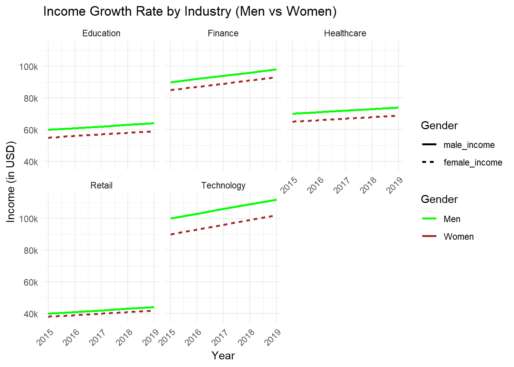
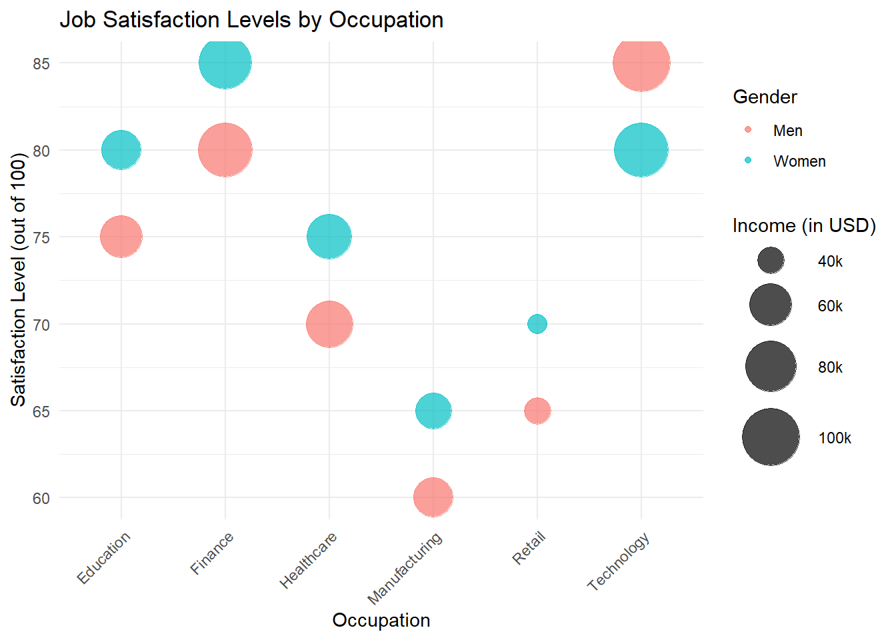
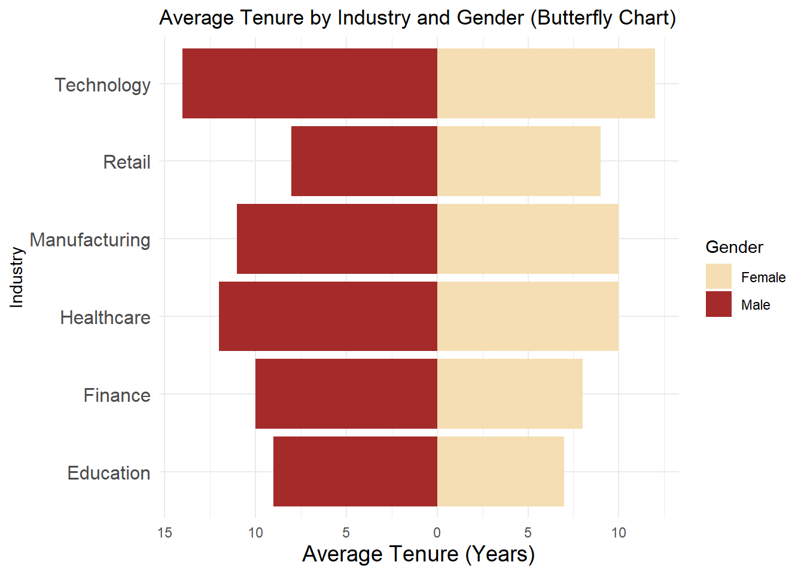
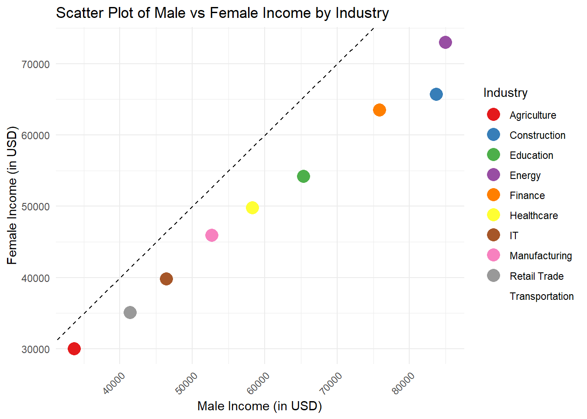

Project
Bad Graph
Income comparison between Men and Women

The above graph is a radial bar chart showing the median annual earnings of men and women, categorised by industry, for civilian employed population aged 16 years and above in the U.S. The chart compares income ranges in which different color depths of blue and red denote greater than $80K and less than $20K, respectively. Each industry forms a sector around the circle and gender wise bar for men and women to have the overview of gender wage differential for each industry.
Analysis of the bad graph:
Values are Hard to Compare : It becomes virtually impossible to attempt any sort of comparison of income disparities across different industries when some of categories are located quite a distance away from others around the circumference of the circle in radial form.
Inefficient Use of Space and Labeling : The circular design bends the bar lengths and since the values are in income, the figures are almost challenging to classify nearer to the center.
Color and Accessibility Issues : The blue for man and the red for woman barely differs and this feature makes it relatively difficult to be understood, particularly by individuals with color vision deficiency.
Interactive Bar Chart (Redesigned Visual 1)
About the chart
- Comparison of Men and Women’s Income by Industry : The bar chart represents the contrast between men income; generally, labeled as Mincome and women income; generally labeled as Fincome, by industries that include agriculture, construction, education, finance, healthcare, information technology, manufacturing, and retail trade.
- Bar Representation : Each industry has two bars; the dark blue bar to indicate the Median men’s income and the lighter blue bar to indicate Median women’s income. This also ensures that there are two important documents: one to compare with the other.
- Interactivity : The income magnitude for each industry is represented, and viewers can obtain more specific values in the form of just a number by hovering the pointer over each fragment displayed on the chart.
4. Disparity Highlight : A neatly contrasting bar graph underlines the kind of industries that feature a large disparity in income, such as Finance wherein male earnings tower over the women employees.
Benefits of the redesigned interactive bar chart:
Improved Comparability : The baseline common to both male and female incomes and the vertical bars appearing in the new chart assists in comparing accurate income differences between males and females in different industries than doing so in the circular chart because the angles cannot be accurate.
Easier Interpretation : The modular structure and clearly labeled axes in the redesign also make it possible to track differences between males and females within each sector without much mental effort compared to their approach in the original design.
Reduced Visual Clutter : The new chart format dispenses with the mess of the circular plan, providing a precise point-by-point comparison, which occupies less space and makes patterns stand out.
Highlighting Key Trends : The numerical arrangement in the redesign is unarguably aligned to sectors with widest gap in earnings, say for example, Finance & Construction industries; Huge gaps make it quicker to recognize clear trends.
Facted line Chart (Redesigned Visual 2)

The Line chart compares income growth rates between men and women across different industries (Education, Finance, Healthcare, Retail, and Technology) over time, from 2015 to 2019. It uses solid and dashed lines to distinguish between the income of men and women.
About the visual
- Industry-wise Comparison:
- Each panel represents a different industry (Education, Finance, Healthcare, Retail, and Technology), showing income trends for both men and women within the same plot.
- There is a noticeable disparity between men’s and women’s income in all industries, with men consistently earning more across the years.
- Income Trends:
- The graph highlights a steady increase in income for both genders across most industries from 2015 to 2019.
- The gap between men’s and women’s income persists, especially in industries like Finance and Technology, where men’s income shows more significant growth compared to women’s income.
- Color and Line Representation:
- The solid green line represents the trend in men’s income, while the solid maroon line represents the trend in women’s income. These colors help distinguish the two genders clearly in each plot.
- The lines for both genders are parallel in some industries, indicating consistent disparities over time, whereas in other industries, such as Technology, the gap appears to widen.
Bubble Chart (Redesigned Visual 3)

The bubble chart compares Job Satisfaction Levels by Occupation, with distinctions based on gender (men and women) and income.
- Axes:
- The x-axis represents Occupation, including categories such as Education, Finance, Healthcare, Manufacturing, Retail, and Technology.
- The y-axis represents Job Satisfaction Level (measured on a scale from 60 to 85, out of 100).
- Bubble Size (Income Representation):
- The size of each bubble corresponds to Income in USD, as shown in the legend on the right. Larger bubbles represent higher incomes (ranging from 40k to 100k USD).
- Gender Comparison:
- The chart distinguishes between Men (represented by blue bubbles) and Women (represented by red bubbles), allowing for gender-based comparisons in job satisfaction and income across occupations.
- Bubble Placement:
- Each bubble’s position on the graph shows the satisfaction level for men and women in each occupation. For example, men in Technology seem to have a high satisfaction level of around 85, while women in Manufacturing have a lower satisfaction level of around 60.
- Key Insights:
- The graph reveals that in certain occupations (such as Technology and Finance), both men and women report higher job satisfaction, with higher incomes indicated by larger bubble sizes.
- In contrast, Manufacturing shows lower satisfaction levels for both men and women, with smaller bubbles representing lower income levels.
- Dual Information Display:
- This bubble chart effectively conveys both job satisfaction and income levels in one visual, allowing for the examination of trends in both satisfaction and compensation across genders and industries.
Butterfly Chart (Redesigned Visual 4)

The Butterfly Chart represents Average Tenure by Industry and Gender.
- Axes:
- The x-axis represents Average Tenure (Years), with a range from 0 to 15 years.
- The y-axis lists different Industries (Technology, Retail, Manufacturing, Healthcare, Finance, and Education).
- Bar Orientation:
- The chart displays two diverging bars for each industry:
- Left side bars (dark red) represent Male tenure.
- Right side bars (light beige) represent Female tenure.
- The chart displays two diverging bars for each industry:
- Gender Comparison:
- The bars are aligned to allow direct comparison between the average tenure of men and women within each industry. The length of the bars indicates the average number of years men and women remain employed in the respective industries.
- Key Insights:
- In Technology and Retail, men have a significantly longer average tenure compared to women.
- In Manufacturing and Healthcare, men and women have more balanced tenures, with minor differences.
- Finance shows a closer balance but with slightly longer tenure for men.
- Education shows a noticeable tenure difference, where women have longer tenures than men.
Time Series Plot (Redesigned Visual 5)
The Interactive Time Series Line Chart showing Male vs Female Income Over Time.
About the visual:
- Axes:
- The x-axis represents *Year, spanning from 2018 to 2023.
- The y-axis represents Income in USD, ranging from 65,000 to 85,000 USD.
- Time Series Trends:
- The chart shows a clear upward trend in male income, with consistent growth from 2018 to 2023.
- Female income shows slight fluctuations over time but grows at a slower rate compared to male income.
- Comparison of Income Over Time:
- The gap between male and female income is visually evident, with male income consistently higher than female income throughout the time period.
- The disparity in income remains relatively stable, with both lines following similar patterns but maintaining a notable difference in value.
- Interactivity:
- Since it’s an interactive time series, the graph likely includes hover features that provide precise income values for each year when the user interacts with the chart.
Scatter Plot (Redesigned Visual 6)

This is a Scatter Plot of Male vs Female Income by Industry.
About the Visual:
- Axes:
- The x-axis represents Male Income (in USD).
- The y-axis represents Female Income (in USD).
- Data Points:
- Each point on the scatter plot represents an industry, with the position of the point determined by the corresponding male and female incomes in that industry.
- Diagonal Line:
- A dashed diagonal line represents equality, where male income equals female income. Points falling on this line indicate industries where men and women earn the same amount.
- Points below the line show industries where male income exceeds female income.
- Points above the line would indicate industries where female income exceeds male income, although in this chart, most points fall below the line.
- Key Insights:
- Most industries show male income exceeding female income, as indicated by the majority of points being below the diagonal line.
- The scatter plot reveals industries where the income disparity is greater, such as IT and Finance, where male income is much higher compared to female income.